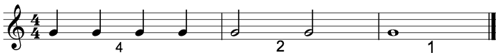
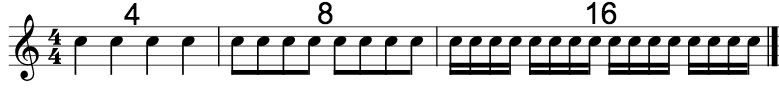

Det finnes flere verdier som ikke er med i eksempelet vårt:
Under ser du først fire fjerdedeler, så to halvnoter, og så én helnote. Her er det helnoten som er ny.

En helnote ligner på en halvnote, bare at den har mistet halen sin.
Neste bilde viser fire fjerdedeler, åtte åttendeler, og seksten sekstendeler. Her er sekstendelene nye. Sekstendeler ligner på åttendeler, bare at der halene er bundet sammen er det nå to streker som binder dem sammen.

Akkurat som åttendeler trenger ikke sekstendeler å bindes sammen. Sånn her ser de ut for seg selv:
Merk at notens hale kan gå opp og ned. Dette gjør ingen forskjell på noteverdien, og dette gjelder alle noter som har haler.
Hva som bestemmer om halen går opp eller ned kommer vi tilbake til senere, i kapitellet takter.